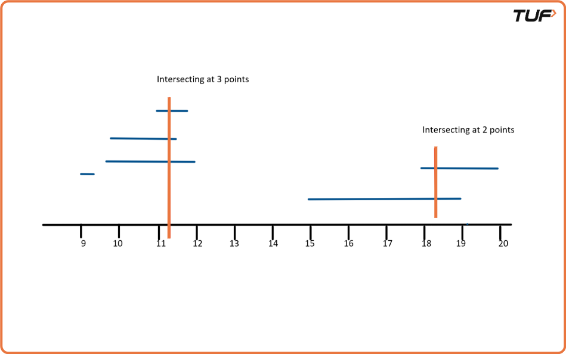
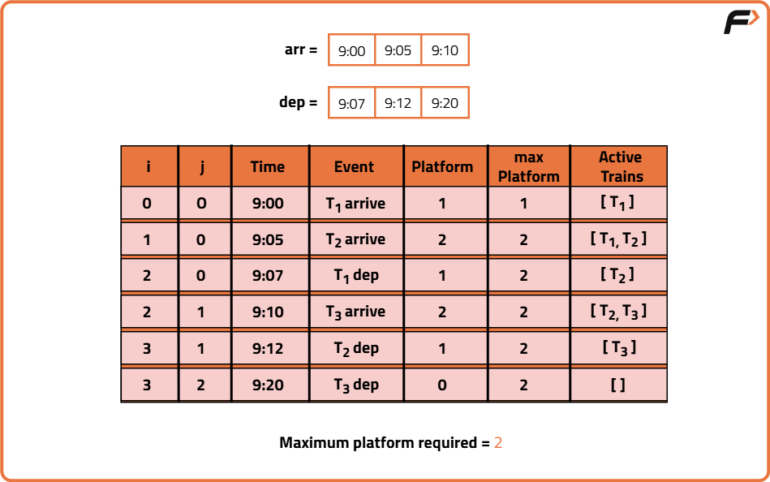

Minimum number of platforms required for a railway
Archived from https://takeuforward.org/data-structure/minimum-number-of-platforms-required-for-a-railway/
Problem Statement: We are given two arrays that represent the arrival and departure times of trains that stop at the platform. We need to find the minimum number of platforms needed at the railway station so that no train has to wait.
Examples
Input: N=6,
arr[] = {9:00, 9:45, 9:55, 11:00, 15:00, 18:00}
dep[] = {9:20, 12:00, 11:30, 11:50, 19:00, 20:00}Output: 3Explanation: There are at-most three trains at a time. The train at 11:00 arrived but the trains which had arrived at 9:45 and 9:55 have still not departed. So, we need at least three platforms here.

Input : N=2,
arr[]={10:20,12:00}
dep[]={10:50,12:30}Output: 1Explanation : Before the arrival of the new train, the earlier train already departed. So, we don't require multiple platforms.
Disclaimer:
Here is the practice link to help you assess your knowledge better.
It's highly recommend trying to
solve it before looking at the solution.
Brute-Force Approach
Algorithm
Consider each interval defined by an arrival and departure time, and check how many other intervals overlap with it. This can be done using nested loops. Throughout the process, track the maximum number of overlapping intervals and return it at the end.
Start by going through each time interval one at a time. For every interval, check how many other intervals it overlaps with.
An overlap happens when the arrival of one is before the departure of the other. Keep a count of how many overlaps occur for the current interval.
After checking all overlaps for that interval, compare it with the maximum seen so far and update if necessary.
Once all intervals have been checked, the maximum count found will be the result.
Code
#include <bits/stdc++.h>
using namespace std;
// Class to group the solution method
class Solution {
public:
// Function to count minimum platforms needed
int countPlatforms(int n, int arr[], int dep[]) {
// Initialize answer to 1
int ans = 1;
// Loop over all arrival times
for (int i = 0; i < n; i++) {
// Initialize count of overlapping intervals
int count = 1;
// Check overlap with every other train
for (int j = i + 1; j < n; j++) {
// Check if there is overlap between train i and j
if ((arr[i] >= arr[j] && arr[i] <= dep[j]) ||
(arr[j] >= arr[i] && arr[j] <= dep[i])) {
count++;
}
}
// Update maximum platform count
ans = max(ans, count);
}
return ans;
}
};
int main() {
int arr[] = {900, 945, 955, 1100, 1500, 1800};
int dep[] = {920, 1200, 1130, 1150, 1900, 2000};
int n = sizeof(arr) / sizeof(arr[0]);
// Create Solution object and call function
Solution obj;
cout << "Minimum number of Platforms required "
<< obj.countPlatforms(n, arr, dep) << endl;
return 0;
}
// Solution class containing the method
class Solution {
// Function to count minimum platforms needed
public int countPlatforms(int n, int[] arr, int[] dep) {
// Initialize answer to 1
int ans = 1;
// Loop over all arrival times
for (int i = 0; i < n; i++) {
// Initialize count of overlapping intervals
int count = 1;
// Check overlap with every other train
for (int j = i + 1; j < n; j++) {
// Check if there is overlap between train i and j
if ((arr[i] >= arr[j] && arr[i] <= dep[j]) ||
(arr[j] >= arr[i] && arr[j] <= dep[i])) {
count++;
}
}
// Update maximum platform count
ans = Math.max(ans, count);
}
return ans;
}
}
public class Main {
public static void main(String[] args) {
int[] arr = {900, 945, 955, 1100, 1500, 1800};
int[] dep = {920, 1200, 1130, 1150, 1900, 2000};
int n = arr.length;
// Create Solution object and call function
Solution obj = new Solution();
System.out.println("Minimum number of Platforms required " +
obj.countPlatforms(n, arr, dep));
}
}
# Class to group the solution method
class Solution:
# Function to count minimum platforms needed
def countPlatforms(self, n, arr, dep):
# Initialize answer to 1
ans = 1
# Loop over all arrival times
for i in range(n):
# Initialize count of overlapping intervals
count = 1
# Check overlap with every other train
for j in range(i + 1, n):
# Check if there is overlap between train i and j
if (arr[i] >= arr[j] and arr[i] <= dep[j]) or \
(arr[j] >= arr[i] and arr[j] <= dep[i]):
count += 1
# Update maximum platform count
ans = max(ans, count)
return ans
# Main execution
arr = [900, 945, 955, 1100, 1500, 1800]
dep = [920, 1200, 1130, 1150, 1900, 2000]
n = len(arr)
# Create object and call the function
obj = Solution()
print("Minimum number of Platforms required", obj.countPlatforms(n, arr, dep))
// Solution class using ES6 class syntax
class Solution {
// Function to count minimum platforms needed
countPlatforms(n, arr, dep) {
// Initialize answer to 1
let ans = 1;
// Loop over all arrival times
for (let i = 0; i < n; i++) {
// Initialize count of overlapping intervals
let count = 1;
// Check overlap with every other train
for (let j = i + 1; j < n; j++) {
// Check if there is overlap between train i and j
if ((arr[i] >= arr[j] && arr[i] <= dep[j]) ||
(arr[j] >= arr[i] && arr[j] <= dep[i])) {
count++;
}
}
// Update maximum platform count
ans = Math.max(ans, count);
}
return ans;
}
}
// Main execution
const arr = [900, 945, 955, 1100, 1500, 1800];
const dep = [920, 1200, 1130, 1150, 1900, 2000];
const n = arr.length;
// Create object and call the function
const obj = new Solution();
console.log("Minimum number of Platforms required " +
obj.countPlatforms(n, arr, dep));
Complexity Analysis
Time Complexity: O(N^2), for every interval we check other intervals for overlap. Space Complexity: O(1), constant additional space is used.
Optimal Approach
Algorithm
Each train has an arrival and departure time. We need to find the maximum number of trains that are at the station at the same time which will tells us how many platforms are needed. If we sort arrival and departure times separately, we can simulate the process. A platform is needed when a train arrives before another train departs and a platform is freed when a train departs before or exactly when the next train arrives.
Sort the list of arrival times and the list of departure times separately. Use two indices to walk through the sorted arrival and departure times.
Start with one platform needed and track the maximum platforms required.
If the next train arrives before or at the same time as the earliest departure, increase the platform count and move to the next arrival.
If the next train arrives after the earliest departure, reduce the platform count and move to the next departure.
Keep updating the maximum platform count during this process until all times are processed.

Code
#include <bits/stdc++.h>
using namespace std;
class Solution {
public:
// Function to find minimum platforms required
int countPlatforms(int n, int arr[], int dep[]) {
// Sort the arrival and departure times
sort(arr, arr + n);
sort(dep, dep + n);
// Initialize pointers and counters
int platforms = 1;
int result = 1;
int i = 1, j = 0;
// Traverse both arrays
while (i < n && j < n) {
// If next train arrives before current one departs
if (arr[i] <= dep[j]) {
// One more platform needed
platforms++;
i++;
} else {
// One train departs, platform freed
platforms--;
j++;
}
// Update maximum required platforms
result = max(result, platforms);
}
return result;
}
};
int main() {
int arr[] = {900, 945, 955, 1100, 1500, 1800};
int dep[] = {920, 1200, 1130, 1150, 1900, 2000};
int n = sizeof(arr) / sizeof(arr[0]);
Solution obj;
cout << "Minimum number of Platforms required "
<< obj.countPlatforms(n, arr, dep) << endl;
return 0;
}
import java.util.Arrays;
class Solution {
// Function to find minimum platforms required
public int countPlatforms(int n, int[] arr, int[] dep) {
// Sort both arrays
Arrays.sort(arr);
Arrays.sort(dep);
// Initialize counters and pointers
int platforms = 1;
int result = 1;
int i = 1, j = 0;
// Traverse both arrays
while (i < n && j < n) {
// If next train arrives before current one departs
if (arr[i] <= dep[j]) {
// One more platform needed
platforms++;
i++;
} else {
// One train departs, platform freed
platforms--;
j++;
}
// Update maximum required platforms
result = Math.max(result, platforms);
}
return result;
}
}
public class Main {
public static void main(String[] args) {
int[] arr = {900, 945, 955, 1100, 1500, 1800};
int[] dep = {920, 1200, 1130, 1150, 1900, 2000};
int n = arr.length;
Solution obj = new Solution();
System.out.println("Minimum number of Platforms required " +
obj.countPlatforms(n, arr, dep));
}
}
class Solution:
def countPlatforms(self, arr, dep, n):
# Sort both lists
arr.sort()
dep.sort()
# Initialize pointers and counters
platforms = 1
result = 1
i, j = 1, 0
# Traverse arrival and departure
while i < n and j < n:
# If train arrives before previous departs
if arr[i] <= dep[j]:
platforms += 1
i += 1
else:
platforms -= 1
j += 1
# Update max platform count
result = max(result, platforms)
return result
# Driver code
arr = [900, 945, 955, 1100, 1500, 1800]
dep = [920, 1200, 1130, 1150, 1900, 2000]
n = len(arr)
obj = Solution()
print("Minimum number of Platforms required",
obj.countPlatforms(arr, dep, n))
class Solution {
// Function to find minimum platforms required
countPlatforms(arr, dep, n) {
// Sort arrival and departure arrays
arr.sort((a, b) => a - b);
dep.sort((a, b) => a - b);
let platforms = 1;
let result = 1;
let i = 1, j = 0;
// Traverse both arrays
while (i < n && j < n) {
if (arr[i] <= dep[j]) {
// More platform needed
platforms++;
i++;
} else {
// One train departs
platforms--;
j++;
}
// Update maximum platforms needed
result = Math.max(result, platforms);
}
return result;
}
}
// Driver code
const arr = [900, 945, 955, 1100, 1500, 1800];
const dep = [920, 1200, 1130, 1150, 1900, 2000];
const n = arr.length;
const obj = new Solution();
console.log("Minimum number of Platforms required",
obj.countPlatforms(arr, dep, n));
Complexity Analysis
Time Complexity: O(N*logN), we sort both the arrival and departure arrays. Space Complexity: O(1), constant additional space is used.